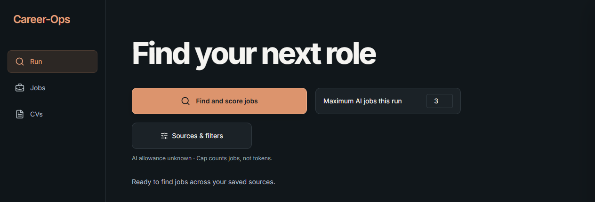
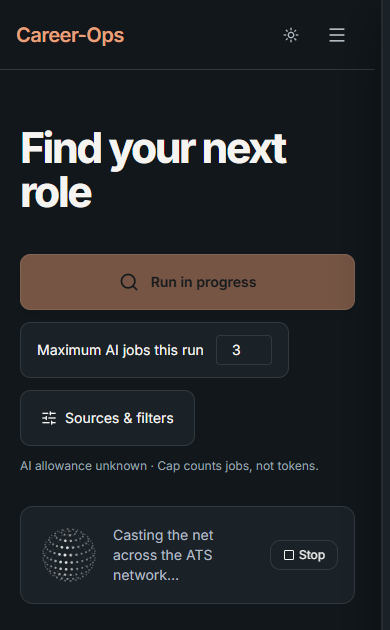

01 / Run
Find your next role
A single flow for finding, scoring, and reviewing opportunities. The public preview stops before any live AI call.
Explore the saved example jobs below. No account or provider access is connected.
From the working project
Exact screenshot crops

02 / Jobs
Jobs
Browse example roles and inspect why one might be worth reviewing.
Synthetic demonstration data · no live vacancies
03 / CVs
CVs
Documents stay linked to a role and require human review before use.
Synthetic demonstration data · no personal CV included
Climate Risk Consultant
Example Energy · illustrative review state
The personal installation can prepare a tailored CV for review. This site stores no CV files and offers no downloads.
04 / How it works
Human decisions, visible evidence
- DiscoverPublic employer and ATS sources
- NormalizeDeduplicate roles and preserve source links
- EvaluateCompare a role with supported CV evidence
- ReviewSurface gaps and unknown eligibility
- DecideA person creates, uses, and sends documents
The backend is still being configured for any public test. No provider keys, AI execution, local files, application submission, or messaging are available here.
Personal side project based on the open-source Career-Ops project. This preview is not affiliated with or endorsed by its maintainers.